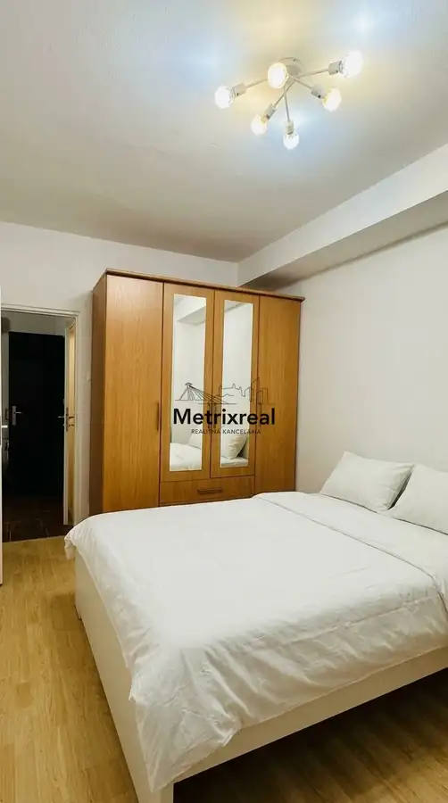
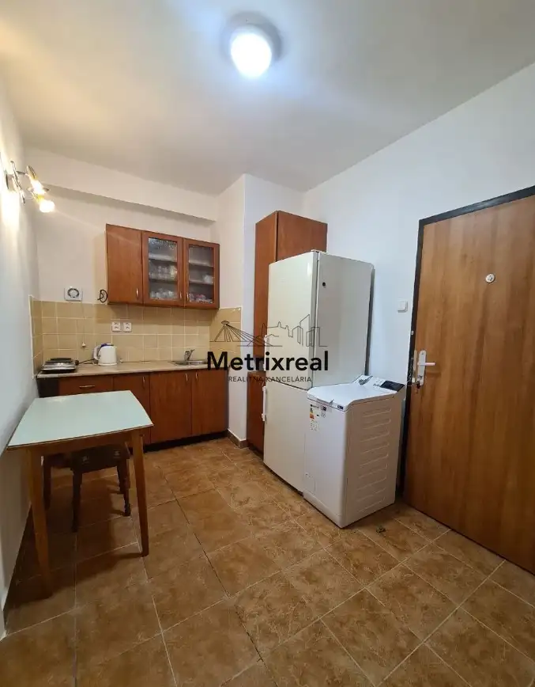

STAVBÁRSKA 40 | VRAKUŇA | Zariadený a klimatizovaný 2-izbový byt 38 m² s 2 samostatnými izbami | Výborná investícia s overeným 2-ročným nájomcom alebo
Vrakuňa, Bratislava



- Dispozícia2-izbový
- Plocha38 m²
- Poschodie4. z 10
- StavČiastočná rekonštrukcia
- VlastníctvoOsobné
O nehnuteľnosti
Realitná kancelária Metrixreal Vám na základe poverenia majiteľa ponúka na predaj prakticky riešený, kompletne zariadený a klimatizovaný 2-izbový byt s úžitkovou plochou 38 m², situovaný na 4. poschodí z 10 v zateplenom a zmodernizovanom bytovom dome na Stavbárskej ulici 40 v Bratislave – mestská časť Vrakuňa.Nehnuteľnosť predstavuje výbornú investičnú príležitosť s okamžitým generovaním výnosu od prvého dňa, no zároveň ponúka ideálnu možnosť štartovacieho bývania. Byt disponuje dvoma samostatnými nepriechodnými izbami a predáva sa kompletne zariadený nábytkom aj spotrebičmi bez nutnosti ďalších vstupných investícií.INVESTIČNÝ POTENCIÁL A FLEXIBILITA OBSADENIA:Overený nájomca už 2 roky: V byte v súčasnosti bezproblémovo býva spoľahlivý, overený nájomca už dva roky, ktorý platby uhrádza načas a riadne sa stará o interiér.Pre investora (výnos od 1. dňa): V prípade kúpy na investičné účely nájomca v byte naďalej zostáva. Nový vlastník tak získava okamžitý mesačný cashflow, nulový výpadok nájomného a absolútne žiadne starosti s obsadzovaním či preverovaním nájomníkov.Pre kupujúceho na vlastné bývanie: V prípade kúpy na vlastné bývanie sa nájomca na základe dohody bezproblémovo vysťahuje a byt bude odovzdaný pripravený na vaše okamžité nasťahovanie.ZÁKLADNÉ PARAMETRE:Celková úžitková plocha: 38,00 m²Poschodie: 4. / 10 (v bytovom dome je inštalovaný nový moderný výťah)Dispozícia: 2 samostatné nepriechodné izby (každá s vlastnými dverami), kuchyňa prepojená so vstupnou chodbou, kúpeľňa so sprchovacím kútom a toaletouTechnický štandard: Vlastná klimatizačná jednotka, plastové okná, interiérové dvereStav a vybavenie: Byt sa predáva kompletne zariadený nábytkom aj elektrospotrebičmiParkovanie: Verejné parkovanie priamo v okolí bytového domuDISPOZÍCIA A VYBAVENIE MIESTNOSTÍ:Izba 1: Priestranná rozkladacia pohovka, konferenčný stolík, písací stôl, televízor a TV stolík s úložným priestorom.Izba 2: Posteľ a úložný priestor.Kuchyňa a chodba: Kuchynská linka vybavená elektrickým sporákom, chladničkou s mrazničkou a práčkou, jedálenský stôl so stoličkami; vo vstupnej chodbe sa nachádza šatníková skriňa.Kúpeľňa s toaletou: Kúpeľňové jadro so sprchovacím kútom, umývadlom a WC.BYTOVÝ DOM A MESAČNÉ NÁKLADY:Zrekonštruovaný bytový dom: Kompletné zateplenie fasády, nový moderný osobný výťah a udržiavané spoločné priestory.Vysoká úroveň bezpečnosti: Vstup do domu je zabezpečený elektromagnetickým čipom, interiér domu aj jeho okolie monitoruje kamerový systém. V objekte bytového domu sídli stanica mestskej polície, čo zabezpečuje nepretržitý dohľad.Rozpis mesačných nákladov:Služby spojené s užívaním bytu (správca): 167,57 € / mesiacFond prevádzky, údržby a opráv: 74,11 € / mesiacZálohové platby za energie: 29,50 € / mesiacOptický internet a TV: 22,80 € / mesiacCelkové mesačné náklady: 293,98 € / mesiacLOKALITA A OBČIANSKA VYBAVENOSŤ:Mestská časť Bratislava – Vrakuňa ponúka kompletnú občiansku vybavenosť a rýchlu dostupnosť:Dopravné spojenie: Zastávky MHD (autobusové a trolejbusové linky) len pár minút chôdze od domu s priamym spojením do centra mesta; rýchly výjazd na bratislavský obchvat D4/R7 aj diaľnicu D1.Nákupy a služby: V pešej dostupnosti supermarkety Billa, Lidl, Tesco, pobočky bánk, pošta, lekáreň, zdravotné stredisko, školy, škôlky a reštaurácie.Zeleň a voľný čas: Blízkosť obľúbeného Vrakunského lesoparku a cyklotrasy popri Malom Dunaji, ideálne na šport a relax.CENA NEHNUTEĽNOSTI:115 000 € (+ provízia RK)Uvedená cena zahŕňa kompletný realitný a právny servis zastrešený advokátskou kanceláriou, autorizáciu zmlúv a správne poplatky spojené s prevodom vlastníckych práv na katastri nehnuteľností. Byt je možné financovať prostredníctvom hypotekárneho úveru, s ktorého vybavením Vám bezplatne pomôže náš hypotekárny špecialista.Sme členom Realitnej únie SR, čo pre Vás znamená absolútnu garanciu férového, transparentného a bezpečného priebehu celej transakcie.KONTAKT PRE OBHLIADKUBc. Vladyslav Chornyi – realitný maklérTelefónne číslo: +421 918 026 238E-mail: chornyi@metrixreal.skMetrixreal – Realitná kanceláriaE-mail: info@metrixreal.sk | Tel.: +421 951 778 117
Parametre
- Cena vrátane energií
- Nie
- Doprava
- Cyklistická infraštruktúra, Cesta, MHD, Trolejbus, Vlak
- Druh
- 2 izbový byt
- Dátum zverejnenia
- 25. 09. 2026
- Energetický certifikát budovy
- nie je
- Orientácia
- Severozápadná
- Podlažie
- 4
- Počet nadzemných podlaží
- 10
- Počet spální
- 2
- Rok výstavby
- 1972
- Stav nehnuteľnosti
- Čiastočná rekonštrukcia
- Telekomunikácie
- Internet
- Typ
- Predaj
- Typ konštrukcie
- Panelová
- Umiestnenie
- Ďalšie nadzemné podlažie
- Vlastníctvo
- Osobné
- Vybavenie
- Verejné parkovanie, Výťah
- Vykurovanie
- Ústredné, Klimatizacia
- Úžitková plocha
- 38 m²
Kde to je


Mohlo by Vás zaujímať
 BytNové
Cena na vyžádáníPrenájom: Priestranný 3-izbový byt (68 m²) s loggiou a panoramatickým výhľadom – Petržalka, Gessayova ulica
Petržalka, Bratislava
3-izbový68 m²12. podlažie
BytNové
Cena na vyžádáníPrenájom: Priestranný 3-izbový byt (68 m²) s loggiou a panoramatickým výhľadom – Petržalka, Gessayova ulica
Petržalka, Bratislava
3-izbový68 m²12. podlažie
 BytNové
1 100 €Luxusný 2-izbový byt v SKY PARK s priamym výhľadom na Bratislavský hrad
Staré Mesto, Bratislava
2-izbový50 m²15. podlažie
BytNové
1 100 €Luxusný 2-izbový byt v SKY PARK s priamym výhľadom na Bratislavský hrad
Staré Mesto, Bratislava
2-izbový50 m²15. podlažie
 BytNové
Cena na vyžádáníPrenájom – Priestranný a svetlý 1-izbový byt (44 m²) so samostatnou kuchyňou – Ružinov, Meteorová ulica
Ružinov, Bratislava
1-izbový44 m²6. podlažie
BytNové
Cena na vyžádáníPrenájom – Priestranný a svetlý 1-izbový byt (44 m²) so samostatnou kuchyňou – Ružinov, Meteorová ulica
Ružinov, Bratislava
1-izbový44 m²6. podlažie